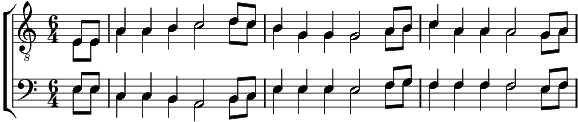

1. Dans le port d' Amsterdam, y a des marins qui chantent
Les rêves qui les hantent au large d'Amsterdam.
Dans le port d'Amsterdam y a des marins qui dorment
Comme des oriflammes, le long des berges mornes.
Dans le port d'Amsterdam y a des marins qui meurent
Pleins de bière et de drames aux premières lueurs
Mais dans le port d'Amsterdam, y a des marins qui naissent
Dans la chaleur épaisse des langueurs océannes.
2. Dans le port d'Amsterdam, y a des marins qui mangent
Sur des nappes trop blanches des poissons ruisselants
Ils vous montrent des dents à croquer la fortune
A décroisser la lune à bouffer des haubans
Et ça sent la morue jusque dans le coeur des frites
Que leur grosses mains invitent à revenir en plus
Puis se lèvent en riant dans un bruit de tempête
Referment leur braguette et sortent en rotant.
3. Dans le port d'Amsterdam y a des marins qui dansent
En se frottant la panse sur la panse des femmes
Et ils tournent et ils dansent comme des soleils
Cachés dans le son déchiré d'un accordéon rance
Ils se tordent le cou pour mieux s'entendre rire
Jusqu'a c'que tout à coup, l'accordéon expire
Alors le geste grave, alors le regard fier
Ils remontent leur batave jusqu'en pleine lumière.
4. Dans le port d'Amsterdam y a des marins qui boivent
Et qui boivent et reboivent et reboivent encore
Ils boivent à la santé des putains d'Amsterdam
De hambourg ou d'ailleurs ; enfin ils boivent aux dames
Qui leur donnent leur joli corps , qui leur donnent leur vertu
Pour une pièce d'or ; et quand ils ont bien bu
Se plantent le nez au ciel se mouchent dans les étoiles
Et ils pissent comme je pleure sur les femmes infidèles
Dans le port d'Amsterdam, dans le port d'Amsterdam.